1. Área y volumen
1.1 Área de figuras planas
Para este tema vamos a preguntarnos ¿Qué es el área de una figura? Para responder a esta pregunta tenemos que empezar por definir el término figura plana.

Es cualquier línea poligonal, curva o mixta cerrada y su interior se considera una figura plana.
Existen las figuras que son polígonos, son aquellas con ángulos bien definidos, por otro lado, también tenemos las figuras planas que son las curvas, estas son aquellas que tienen una línea curva en su contorno. Por lo tanto, ya podemos dar una definición de área.
El área es el espacio que queda encerrado entre los límites de una figura.
Ahora bien, aquí podemos definir otro término que es el perímetro, como la suma de todas las longitudes del contorno de una figura.
Hay que resaltar las unidades de medidas del área y del perímetro.
| Figura geométrica | Perímetro | Área |
|---|---|---|
| 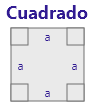 | a + a + a + a = 4a | a * a = a2 |
| 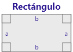 | a + a + b + b = 2a + 2b | a * b = ab |
| 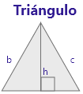 | a + b + c | ( a * h ) / 2 |
| 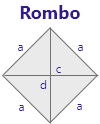 | a + a + a + a = 4a | ( d * c ) / 2 |
| 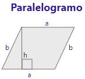 | a + a + b + b = 2a + 2b | a * h |
| 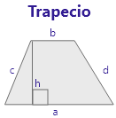 | a + b + c + d | ( ( a + b ) / 2 ) * h |
| 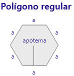 | ||
| 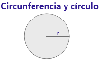 | π = 3,14 2 π r |
2 π r2 |
Las unidades de medida del área son m2, cm2, mm2, el término cuadrático (2), se debe a que es una medida de superficie.
Para el perímetro las medidas son lineales puesto que es una medida de longitud m, cm, mm.
1.2 Volumen de sólidos regulares
El vocablo en latín volumen ha impulsado la aparición del concepto de volumen, una palabra que permite describir el grosor o tamaño que posee un determinado objeto. Asimismo, el término sirve para identificar la magnitud física que informa sobre la extensión de un cuerpo con relación a tres dimensiones (alto, largo y ancho). Dentro del Sistema Internacional, la unidad que le corresponde es el metro cúbico (m3).
Para poder comprender mucho más la relación entre las figuras planas y los volúmenes de sólidos lo invitamos a ver una videoclase con los ejemplos y razonamiento lógico matemático de las áreas y volumen.
2. Trigonometría
2.1 Plano cartesiano
El plano cartesiano recibe su nombre por el filósofo y matemático Rene Descartes, quien ideó un sistema de coordenadas compuesta por dos rectas perpendiculares, que se interceptan de forma perpendicular formando un ángulo de 90°; si lo descrito anteriormente no fue lo suficientemente claro, aquí un diagrama del plano cartesiano:
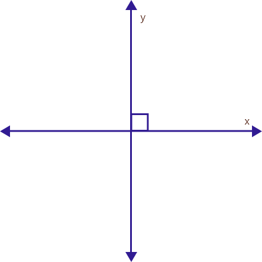Una de las aplicaciones más conocidas del plano cartesiano es la de localización geográfica, ahora vamos a hacer el siguiente ejercicio mental:
Invente un sistema de coordenadas en el que pueda describir a una persona como llegar a su casa.
Componentes del plano cartesiano

Ejes: el eje horizontal conocido como el eje 0x es conocido como el eje de las abscisas y el eje vertical conocido como el eje 0y es el eje de las ordenadas.
Cuadrantes: el plano cartesiano está compuesto por cuatro (4) cuadrantes cada uno conformado por un ángulo de 90°, cabe decir, que los cuadrantes en un plano cartesiano se leen en sentido antihorario (sentido contrario a las manecillas del reloj).
Ángulos: al estar compuesto de cuatro cuadrantes, cada uno de 90°, podemos decir que al dar la vuelta completa tendremos una circunferencia 360°.
Ubicación de puntos en el plano
Los puntos en el plano cartesiano están en el orden (x, y); por lo tanto, tener el punto (3,5) es tener 3 unidades en el eje x, y 5 unidades en el eje y.
Aquí vale la pena recordar la asignación de signos por cada cuadrante.
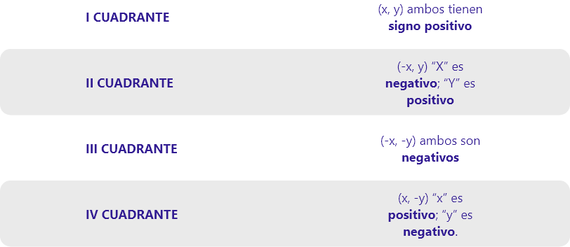En ese orden de ideas si tengo las coordenadas (-4, 6) tendremos un punto que está ubicado 4 unidades en el eje negativo de la x y 6 unidades en el eje positivo de la y; así pues, estará ubicado en el II cuadrante.
2.2 Razones trigonométricas
Las razones trigonométricas como su nombre lo indica, viene del estudio de la relación de los catetos de un triángulo con sus respectivos ángulos, pero específicamente del triángulo rectángulo.
Triángulo rectángulo es aquel que tiene un ángulo recto (90°).
Las razones trigonométricas son 6: seno, coseno, tangente, cotangente, secante y cosecante, las más utilizadas son las primeras tres, puesto que las otras son la forma inversa de las primeras.
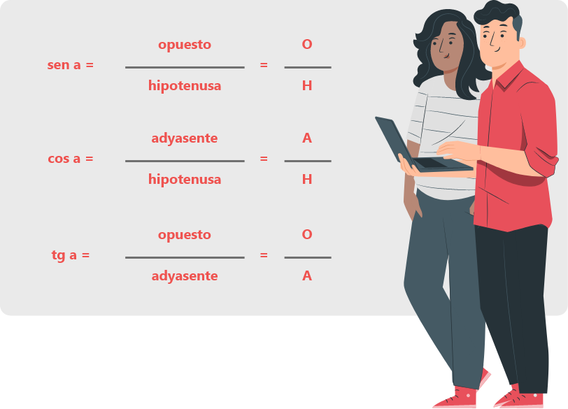2.3 Teorema de Pitágoras
El teorema de Pitágoras relaciona los catetos de un triángulo rectángulo con su hipotenusa.
Pues bien, el teorema de Pitágoras dice que:
En todo triángulo rectángulo, el cuadrado de la hipotenusa es igual a la suma de los cuadrados de los catetos.
c2 = a2 + b2
c = hipotenusa
a = cateto opuesto
b = cateto adyacente
Dado que la formula permite relacionar los catetos con la hipotenusa, puede despejarse de modo que me permita hallar uno de los catetos si tengo hipotenusa y el otro cateto.
Si despejamos la fórmula quedaría de la siguiente manera:
Para hallar el cateto opuesto:
a2 = c2 - b2
Para hallar el cateto adyacente.
b2 = c2 - a2
Ejemplo
Se necesita saber la hipotenusa de un triángulo rectángulo cuyo cateto opuesto mide 7 unidades y su cateto adyacente mide 9 unidades.
Para esto debemos sacar los datos del problema:
- a = 7 u
- b = 9 u
- c = ?
Ahora reemplazamos los datos en el teorema y procedemos a despejar:
c2 = 72 + 92
c2 = 49 + 81
c2 = 130
Recordemos que siempre que se requiere despejar una variable elevada a una potencia, esta pasará a ser un radical, por lo tanto;
c = 2√ 130
c = 11.40
La respuesta es que la hipotenusa mide 11.40 unidades, se debe verificar que el valor de la hipotenusa debe ser mayor que el de cada uno de los catetos.
11.40 > 9 > 7
Ejemplo
Tenemos un triángulo con una hipotenusa de 12 unidades y un cateto opuesto de 6.5 unidades,
¿Cuál es el valor del cateto adyacente?
- c = 7 u
- a = 9 u
- b = ?
b2 = c2 - a2
b2 = 122 - 6.52
b2 = 144 - 42.25
b = 2√ 101.75
b = 10.08
Por lo tanto el cateto adyacente mide 10.08 unidades, se verifica que es menor que la hipotenusa.
2.4 Ley de senos y cosenos
La ley de senos
Ya conocemos por medio de las razones trigonométricas (seno, coseno, tangente) que existe una relación entre la medida de los lados de un triángulo y el ángulo que forman entre ellos, esto en el caso de los triángulos rectángulos, pero ¿Qué pasa cuando un triángulo no tiene un ángulo recto? Es en este punto donde se aplica la ley de senos:
“En todo triángulo se cumple que la razón del seno de un ángulo con su lado opuesto es igual a la razón de cualquiera de los otros ángulos con su lado opuesto.”
La ley de cosenos
“En todo triangulo se cumple que conociendo 2 lados y el ángulo comprendido entre ellos, se puede conocer el tercer lado.”
Esto supone 3 posibilidades:
a2 = b2 + c2 - 2bc ( cos α )
b2 = a2 + b2 - 2ac ( cos β )
c2 = a + b - 2ab ( cos θ )
Ahora vamos a resolver un triángulo rectángulo, utilizando ambos métodos.
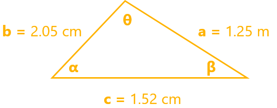Encontrar los ángulos α, β, θ.
Aplicando la ley de cosenos:
1.252 = 2.052 + 1.522 - 2 ( 2.05 ) ( 1.52 ) cos α
Despejando el ángulo α
Ahora vamos a hallar β y θ aplicando la ley de senos:
Despejamos β:
Como sabemos que la suma de los ángulos internos de un triángulo debe ser 180°; entonces:
θ = 180 - α - β
θ = 180 - 37.40° - 84.93°
θ = 57.67°
3. Ecuaciones
En nuestro diario vivir nos hacemos ciertas preguntas acerca del valor de algún objeto, de un alimento, el peso del producto, un elemento (x) en una balanza llena de cosas, comparación de dos marcas, todo esto sin darnos cuenta, nos lleva a las ecuaciones.
Una ecuación son igualdades matemáticas entre dos expresiones con datos conocidos y desconocidos separadas por el signo igual. Las encontramos en todos los ámbitos del quehacer diario, no formalizadas con una expresión matemática, pero sí como un problema donde queremos descubrir el valor de un dato desconocido.
Por esto y más, queremos que nos acompañe a ver las características más esenciales de este tema. Las ecuaciones.
Para el SENA es importante el desarrollo de las competencias en el ámbito educativo, laboral y personal.
3.1 Ecuación
Iniciemos con la definición de ecuación.
Definición
Una ecuación es una igualdad entre dos expresiones algebraicas; puede no existir regla de correspondencia uno a uno como en el caso de la función.
Existen dos tipos de ecuaciones.
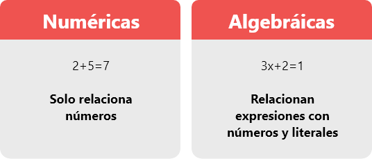Las ecuaciones se componen en tres partes, primer miembro, signo igual y segundo miembro. Cada elemento de los miembros, se llaman términos, que pueden ser numéricos o literales. Los términos numéricos a su vez pueden ser coeficientes no constantes. Y las partes literales son las variables o incógnitas.
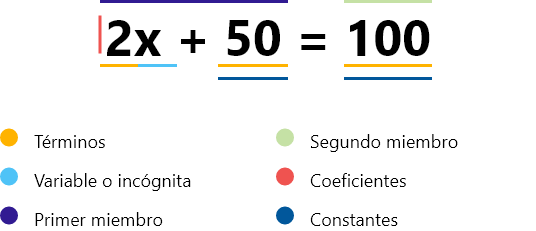Solucionar una ecuación es encontrar el valor de la o las incógnitas, que satisface la igualdad.
x + 4 = 7
x = 3
3 + 4 = 7
7 = 7
Dos ecuaciones son equivalentes si tienen la misma solución
Ejemplo
3x + 4 = 10 y 5x = 10, ya que x = 2, satisface las dos ecuaciones.
- Sean las siguientes ecuaciones: 3x + 4 = 10 y 5x = 10
- Solución x = 2
- El número dos satisface a las 2 ecuaciones 3 ( 2 ) + 4 = 10 y 5 ( 2 ) = 10
- Las dos ecuaciones son equivalentes.
¿Y qué es una variable?
Una variable es un símbolo cualquiera que puede representar cualquier valor. Para el caso de ecuaciones es la incógnita y es el valor que se quiere encontrar para que satisfaga la igualdad.
Ejemplo
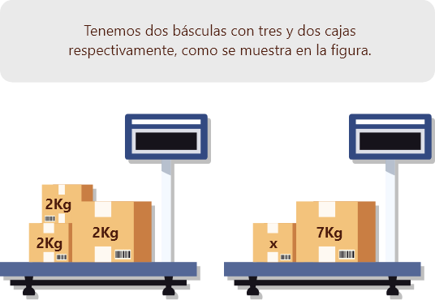Solución
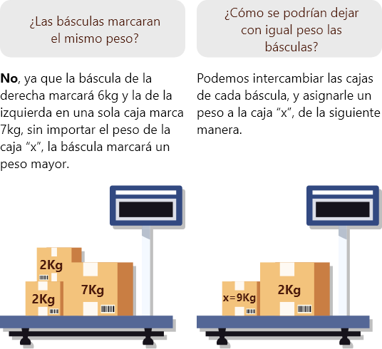3.2 Ecuaciones lineales
Son ecuaciones de primer grado, con una sola incógnita y son de la forma ax+b=c, con:
a,b,c ∈R R
Nota
Primer grado, indica que el exponente de la variable x es 1.
Ejemplo
En ocasiones se puede presentar en la misma ecuación dos veces la incógnita, sin embargo, no cambia el hecho que son ecuaciones lineales.
Ejemplo
Como se mencionó anteriormente, solucionar una ecuación es encontrar el valor de la incógnita, es decir, se debe despejar la incógnita.
Ejemplo
Paso 1
Sumamos el opuesto aditivo de 1, a cada miembro de la ecuación.
3x + 1 + ( -1 ) = 10 + ( -1 )
Recordemos el opuesto aditivo.
Todo número real ( a ) tiene un opuesto, ( -a ), que satisface a + ( -a ) = 0
Paso 2
Se efectúan las operaciones en cada miembro.
3x = 9
Paso 3
Multiplicamos por el opuesto multiplicativo de 3, a cada miembro de la ecuación.
Recordemos el opuesto multiplicativo: todo número real (a) diferente de cero tiene un recíproco, 1/a, que satisface ( a * ( 1/a ) = 1)
3 * ( 1/3 ) = 9 ( 1/3 )
Paso 4
Se efectúan las operaciones en cada miembro x = 3.
La solución de la ecuación es x = 3
Aplicación I
Ahora veamos una aplicación de las ecuaciones:
A octubre de 2019, el atleta Usain Bolt recorrió 200 metros en 19.19 segundos, esto es 0.49 segundos menos que la marca del atleta Frank Fredericks. ¿Cuál es la marca del atleta Frank Fredericks?
Solución
Para calcular la marca de Frank Fredericks, podemos modelar el problema por medio de la siguiente ecuación.
x - 0.49 = 19.19, donde x es la marca de Fredericks
Encontramos el valor de la incógnita x:
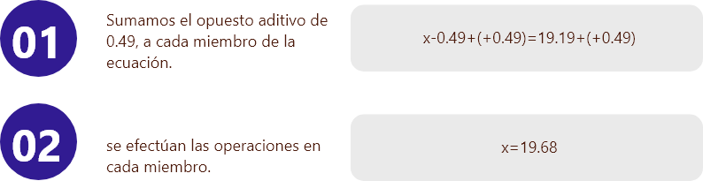La marca de Frank Fredericks es de 19.68 segundos
Como se mencionó, en las ecuaciones puede aparecer la variable en los dos miembros.
Ejemplo
3x + 4 = 7 - 5x
La solución es muy similar a la vista en ejercicios anteriores.
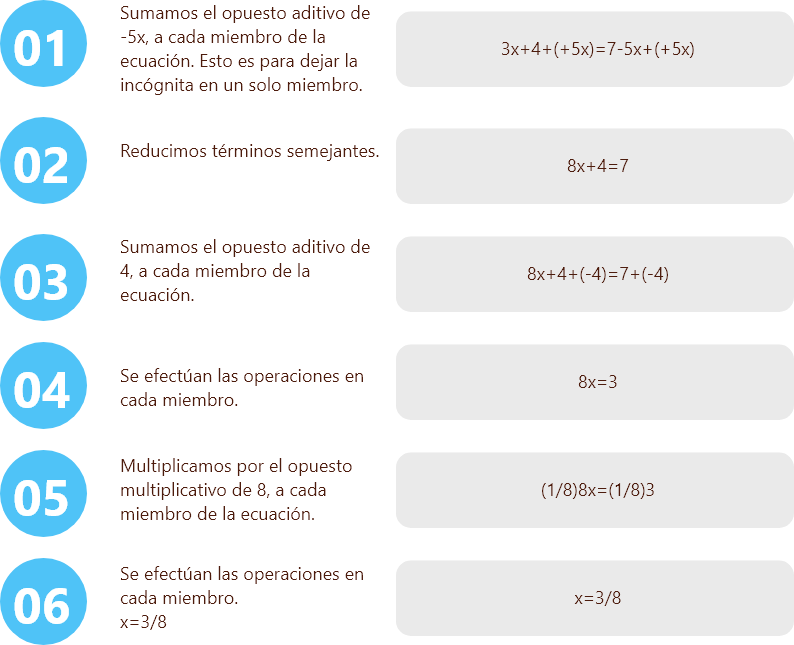Aplicación II
Saske tiene 3/2 de la cantidad de esferas de Doris y Suki tiene 4/3 de la cantidad de esferas de Doris. Si Doris cuenta las de ella más 440 esferas, obtiene la misma cantidad de esfera que las de Saske y Suki juntas.
Solución
Identificamos las variables del problema.
Se plantea la ecuación de acuerdo al enunciado del problema:
Se observa que es una ecuación de primer grado con una incógnita.
Para la solución se tienen los siguientes pasos:
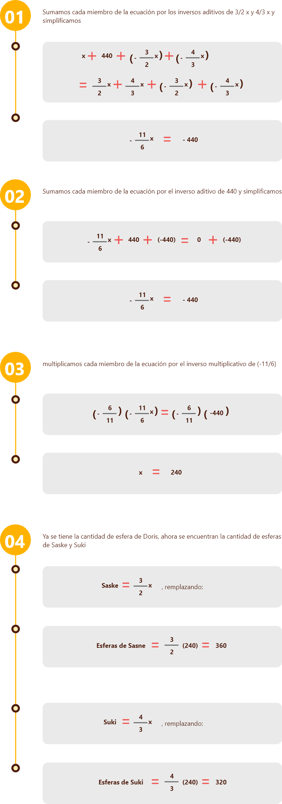3.3 Sistema de ecuaciones lineales 2x2
Ecuaciones de primer grado con dos incógnitas
ax + by = c, donde a,b,c ∈ R
Nota
Primer grado ya que “x” y “y” tienen exponente de grado 1.
Se pueden plantear sistemas de ecuaciones lineales 2x2, que significa dos ecuaciones con dos incógnitas. En general se pueden plantar sistemas de n ecuaciones con n incógnitas.
Este curso se centrará solo es los sistemas 2x2 y se denotan de la siguiente manera.
a1 x + b1 y = c1
a2 x + b2 y = c2
donde a1, a2, b1, b2, c1, c2 ∈ R
Ejemplo de un sistema 2x2
Solucionar un sistema 2x2 es encontrar el valor de “x” y “y” que satisfacen las dos ecuaciones.
Pero no siempre tienen solución los sistemas o tienen infinitas soluciones. Por esto, existen diferentes tipos de sistemas de ecuaciones, como se muestra en la figura.
4x + 3y = 7
5x - 4y = 1
Métodos para solución de sistemas de ecuaciones 2x2
Para solucionar un sistema de ecuaciones existen diferentes técnicas o métodos, entre ellas veremos dos:
- Método igualación
- Método por reducción
Independiente de la técnica, la solución será la misma.
Método de igualación
Consiste en despejar la misma incógnita en cada ecuación para luego igualar las dos ecuaciones, dejando una sola ecuación lineal con una incógnita y se resuelve como tal.
Ilustremos este método con un ejemplo.
4x + 3y = 11
5x - 4y = 6
Ya con esto encontramos la solución al sistema de ecuaciones 2x2 y es:
x=2, y=1
Actividad no calificable
El precio de un computador de mesa más un escritorio es de $1.200.000 y si realizamos la diferencia entre las dos cosas, el resultado es $400.000.
¿Qué cuesta cada artículo por separado?
Solución

Método de reducción (eliminación)
Consiste en sumar las dos ecuaciones, de tal manera que se pueda eliminar una de las variables en el proceso. Para esto se equilibran las ecuaciones multiplicando cada ecuación por el coeficiente contrario de la variable objetivo, es decir la variable a reducir o eliminar, dejando así una sola ecuación lineal con una incógnita y se resuelve como tal.
Ilustremos este método con un ejemplo.
Dado el siguiente sistema de ecuaciones, encontrar los valores de “x” y “y” que satisfacen el sistema.
3x + 5x = 35
4x - 10y = 30
Solución
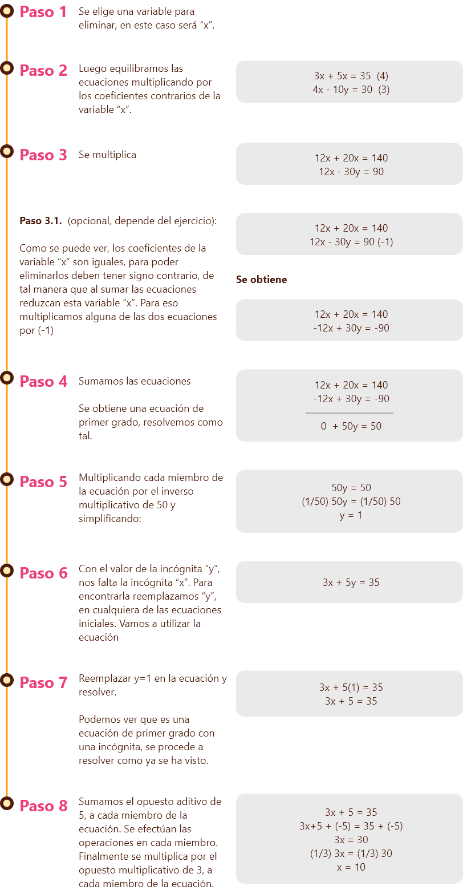Ya con esto encontramos la solución al sistema de ecuaciones 2x2 y es:
x=10, y=1
Actividad no calificable
En el patio de mi casa tengo canarios y gatos. Al contar sus cabezas suman 8 y al contar sus patas suman 20.
¿Cuántos gatos y canarios tengo?
Solución
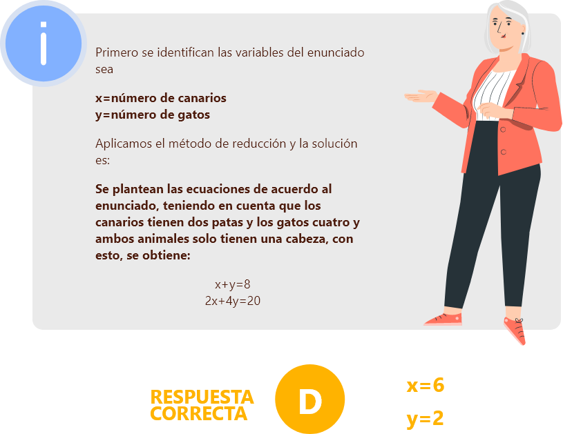3.4 Ecuaciones cuadráticas
Las ecuaciones cuadráticas, son ecuaciones de segundo grado con una incógnita y se representan como:
ax2 + bx + c = 0 con a, b, c ∈ R, a ≠ 0
Y tienen como máximo dos soluciones que satisfacen la ecuación.
La forma ax2 + bx + c = 0 se llama forma estándar de la ecuación cuadrática (Kaufman, 2009).
Ejemplo
Para hallar la o las soluciones de la fórmula cuadráticas, se puede aplicar diferentes métodos como son factorización o la ecuación cuadrática.
En este curso aplicaremos el método de la fórmula cuadrática para las ecuaciones en su forma estándar, factorización para las ecuaciones de la forma:
ax2 + bx = 0 con a ≠ 0
y despejes sencillos para ecuaciones de la forma:
ax2 + c = 0 con a ≠ 0
Formula cuadrática
La fórmula cuadrática se usa para resolver cualquier ecuación cuadrática al expresar la ecuación en la forma estándar y sustituyendo los valores a, b, c en la fórmula (Jerome Kaufman, 2009)
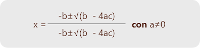Ejemplo I
Resolver la ecuación
3x2 - 3x - 36 = 0
Solución
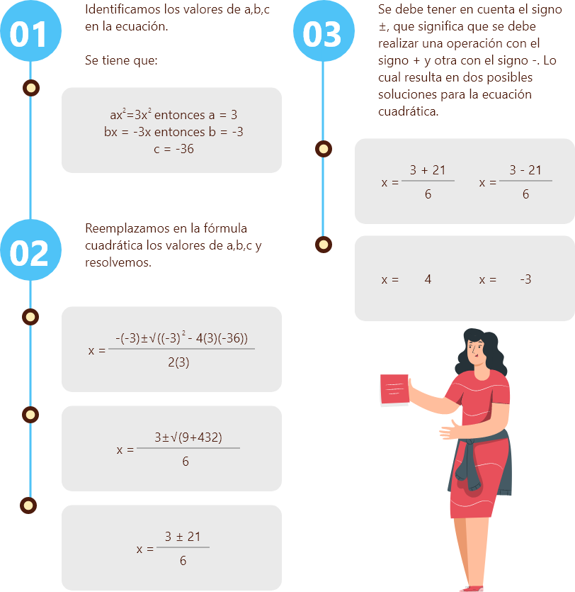Ejemplo II
Resolver la ecuación:
4x2 - 16x = 0
Solución
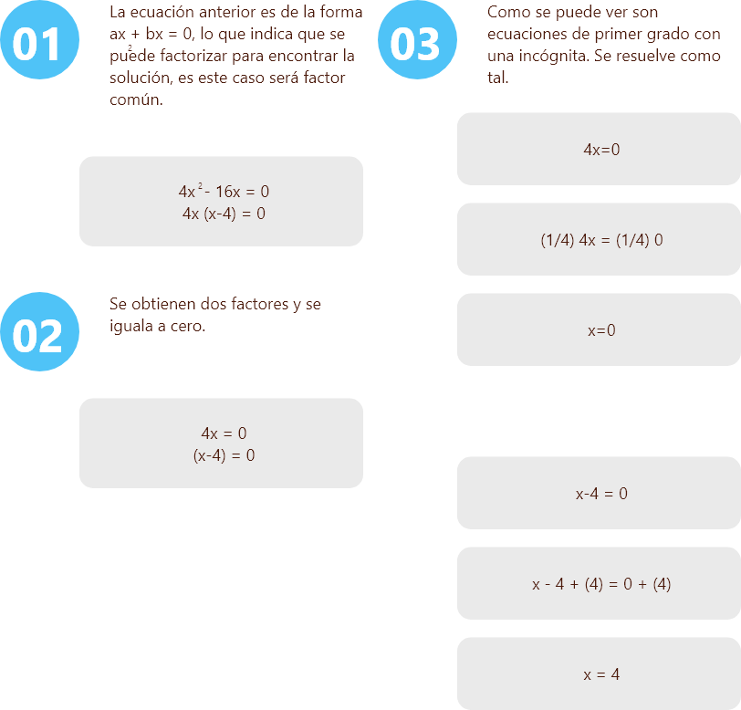Se obtiene dos soluciones para la ecuación cuadrática.
x = 0 y x = 4
Ejemplo III
Resolver la ecuación:
2x2 - 50 = 0
Solución
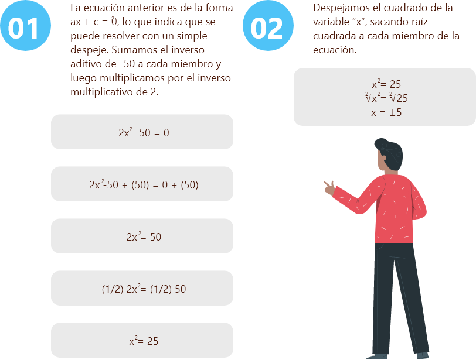Se obtiene dos soluciones para la ecuación cuadrática:
x = 5 y x = -5
Aplicación de la fórmula general en ecuación cuadrática
Tengo un rectángulo de cartón de 60cm de largo por 80cm de alto. Deseo construir una caja, cuya área de la base sea 100 cm . Según las instrucciones se debe cortar en cuadrados iguales las cuatro esquinas y luego plegar los lados, como se muestra en la figura.
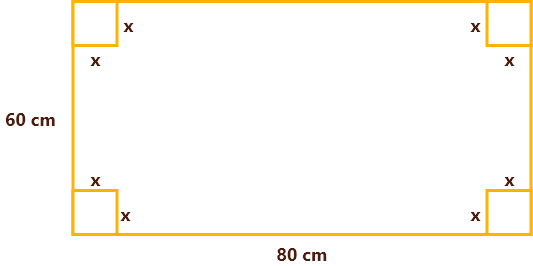¿La longitud del lado del cuadrado que debo recortar de cada esquina es?
Solución
Analizamos las medidas del rectángulo, junto con las medidas de los cuadrados de longitud “x”.
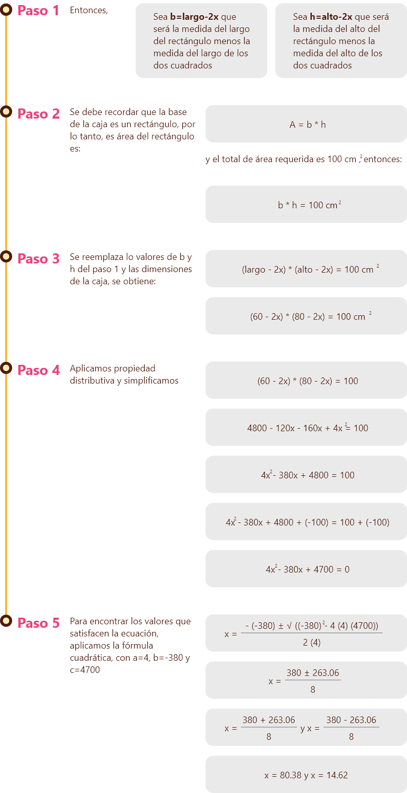Se observan los dos resultados y se analiza el contexto, para el valor de x=80.38, excedería las dimensiones de la caja, por lo tanto se descarta y se opta por el valor de x=14.62, que es la medida del lado del cuadrado que se estaba buscando.
4. Funciones
En nuestro diario vivir nos encontramos en muchas ocasiones con la interacción de magnitudes y variables, esta interacción nos lleva a generar una relación entre ellas y con ciertas condiciones estas relaciones se llaman funciones.
Las funciones están en todas partes, por ejemplo, describir la trayectoria de una pelota, comportamiento de una divisa, registro del peso en un determinado tiempo, expresar el volumen de una caja en términos de su longitud, en fin, podemos encontrar las funciones en todas partes.
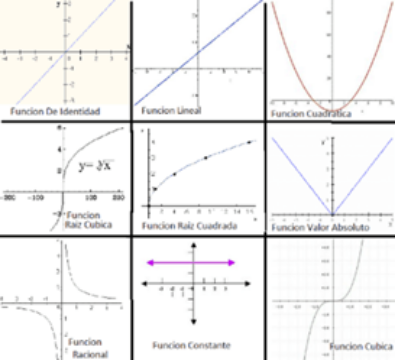Por esto y más, queremos que nos acompañe a ver las características más esenciales de este tema: Las funciones.
Para el SENA es importante el desarrollo de las competencias en el ámbito educativo, laboral y personal.
4.1 Definición y ejemplo de función
4.2 Definición de dominio
El dominio de una función f, denotado por D(f), es el conjunto de todos los valores que toma la variable independiente “x”. El rango o recorrido de una función f, denotado por R(f), es el conjunto de todos los valores que toma la variable dependiente “y”.
Ejemplo
Tiene como dominio todos los números reales, ya que a cada número x que pertenece a los números reales R, podemos reemplazar en la expresión 5x-2 y obtener un número real.
la función f(x) = 5x - 2
No en todos los casos el dominio son los números reales. Por ejemplo, para la función f(x) = log(x), no podemos reemplazar todos los números reales en la expresión, ya que el logaritmo de un número negativo no está definido, sólo para los números mayores a cero, es decir x o reales positivos, por lo tanto, podemos escribir el dominio como D(f) = ( 0 , ∞ ) = R.
Como mencionamos, el rango son todos los posibles valores que toma la variable “y”, en el caso de la función f(x) = 5x - 2, los valores de la variable “y” depende de la expresión 5x-2; en este caso, “y” toma cualquier valor en los reales, por lo tanto, el rango será, R(f) = R.
Ahora si analizamos el rango de la función anterior f(x) = log(x), notamos que podemos obtener como resultado cualquier número real, entonces, R(f) = R.
Nota
Así como el dominio no siempre son todos los números reales, en el rango sucede lo mismo. Esto se verá más adelante cuando analicemos diferentes tipos de funciones.
Pero te estás preguntando, y ahora esto cómo afecta en un contexto real, ¿cómo se aplica una función en un contexto real?
Veamos una aplicación.
4.3 Ejemplo de aplicación de la función
Amos Dolbear fue un físico estadounidense, que en 1897 publicó una ecuación, donde se podía calcular la temperatura a partir de los chirridos de un grillo. La ecuación varía dependiendo de la especie del grillo.
La ecuación para calcular la temperatura en grados Celsius a partir de los chirridos de un grillo campestre es:
donde c es la cantidad de chirridos por minuto.
Vamos a realizar las siguientes acciones para poder determinar la temperatura a partir de la cantidad de chirridos que hace un grillo en un minuto
Calcular la temperatura si se registran 145 chirridos en un minuto.
¿Cuál será la temperatura para un registro de 54 chirrido?
¿En qué tipo de clima estaría el grillo?
¿Es posible que se registrara 600 chirridos por minuto de un grillo, en cualquier lugar del planeta?
Miremos la solución a la aplicación:
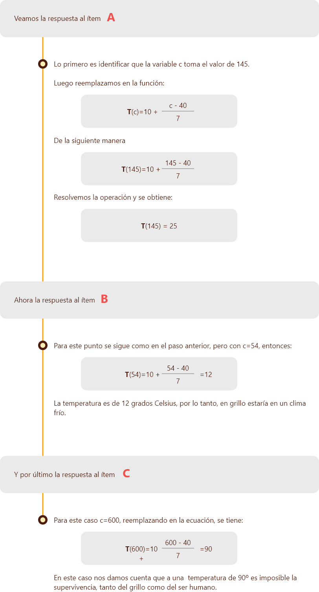Es de esta manera como podemos ver la aplicación de las funciones en un contexto real, hay muchas formas de poder llevar las matemáticas a nuestra vida diaria.
5. Función lineal
En el mundo de las funciones, existen las lineales, las cuales están presentes en muchas actividades que nosotros realizamos a diario.
Por ejemplo, para determinar la altura de un recipiente con determinado volumen, la distancia que recorre un carro con una velocidad constante, el cálculo de costos y precio de productos, en realidad podemos seguir planteando ejemplos y nunca acabar, por eso en esta sección queremos abordar este tipo de función, como una relación de dependencia entre dos variables.
Por esto y más, queremos que nos acompañe a ver las características más esenciales de este tema: Las funciones lineales.
Para el SENA es importante el desarrollo de las competencias en el ámbito educativo, laboral y personal.
5.1 Las funciones lineales
Iniciemos con la definición de La función lineal, esta hace parte del grupo de funciones polinómicas, cuya expresión algebraica se puede expresar como:
f(x) = ax + b, con a, b ∈ R
Seguramente no has comprendido muy a detalle la expresión, pero si vemos un ejemplo ya nos vamos acercando a matemática.
Ejemplo

Recordemos que las funciones lineales deben tener una característica especial, la cual es que la variable independiente (X) siempre debe tener exponente 1.
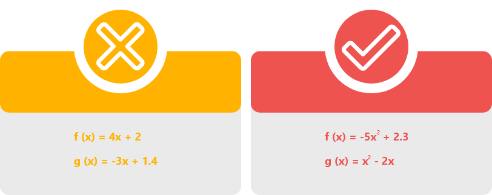Ya que logramos identificar como es la función lineal f(x) = ax + b, vamos a ver cómo se relaciona con la ecuación de la recta ( y = mx + b ). Veamos la siguiente animación.
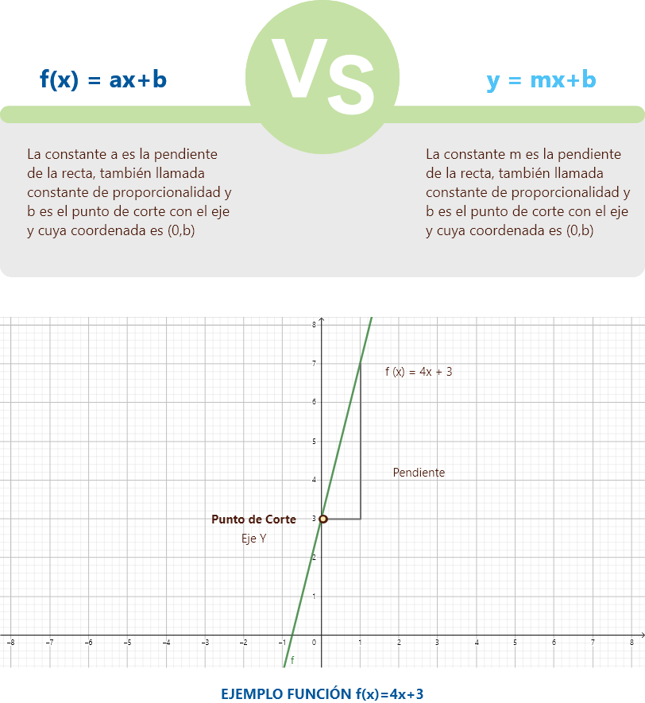Ahora analicemos la pendiente o constante de proporcionalidad (a), la cual debemos tener en cuenta estos tres casos:
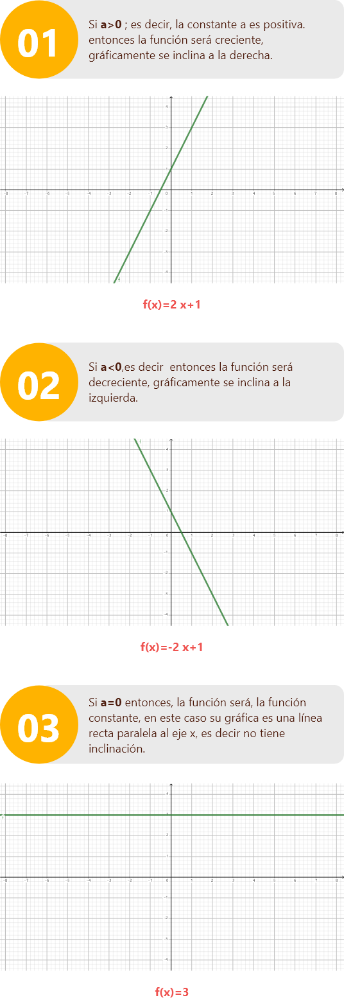Variación del punto de corte con el eje Y.
5.2 Características de la función lineal
Ya estamos dominando el terreno de las funciones lineales, ahora tengamos en cuenta sus principales características.
El dominio y el rango de la función lineal es el conjunto de los números reales R.
Es una función continua.
Una de las aplicaciones de la función lineal, es el análisis del punto de equilibrio.
Pero te estás preguntando, ¿y ahora esto cómo afecta en un contexto real?, ¿Cómo se aplica una función lineal en una situación profesional?
Veamos una aplicación.
Ejemplo
GamerX Ltda, produce controles de alta calidad para videojuegos. La empresa publicó un anuncio en una página de videojuegos. El costo del anuncio es de $400.000. La producción de cada control es de $100.000 y la empresa cobra $140.000 por control. Grafique las funciones de costo e ingreso sobre el mismo plano cartesiano e interprete la gráfica.
Miremos la solución a la aplicación:
Solución
Se construye la función teniendo en cuenta el costo fijo, que en este caso es el costo de la publicidad $400.000 y el costo variable de producción del control que es de $100.000, entonces la función C de costos se puede expresar como una función de x, el número de controles producidos.
C(x) = 100.000x + 400.000
Cada control se vende en $140.000, entonces, el ingreso R se puede expresar como una función de x, el número de controles vendidos.
R(x) = 140.000x
Al graficar cada función obtenemos:

Para este caso los valores negativos del dominio no se tienen en cuenta en las dos funciones, ya que no tiene sentido hablar de unidad fabricadas y vendida para estos valores. Por lo tanto, la menor cantidad de unidades producidas y vendidas será cero.
Una vez construida las funciones, se resalta la pendiente o constante de proporcionalidad y el punto de corte con el eje “y”.
los 100.000 son la constante de proporcionalidad.
los 400.000 son el punto de corte con el eje Y.
También el significado del punto de corte de las dos funciones con el eje “y” será el valor inicial, es decir en el caso de que x toma el valor de cero. Se explica que el costo fijo se paga produzca o no, controles la empresa.
El punto de corte sería 400.000
La parte de las funciones debajo de ese punto son perdidas y la parte de arriba corresponde a la utilidad.
Glosario
Dominio:superficie acotada, que se distingue de lo que la rodea.
Dominio:el dominio de una función f, denotado por D(f), es el conjunto de todos los valores que toma la variable independiente.
Equivalentes:es un adjetivo que expresa algo que tiene igual valor, estimación, potencia o significado.
Grados Celsius:grado Celsius o centígrado (símbolo ºC), es la unidad para medir la temperatura.
Pérdida:la palabra perdida se utiliza para referirse a situaciones con resultados negativos. Los resultados negativos surgirán cuando los gastos sean superiores a los ingresos.
Polinomio:en matemáticas, un polinomio es una expresión algebraica constituida por una suma finita de productos entre variables (valores no determinados o desconocidos) y constantes (números fijos llamados coeficientes), o bien una sola variable. Las variables pueden tener exponentes de valores definidos naturales incluido el cero y cuyo valor máximo se conocerá como grado del polinomio.
Punto de equilibrio:determina cuál es el nivel de ventas preciso para poder cubrir el total de los costes de la empresa, puesto que predice el punto de ventas anuales que se debe conseguir para no tener pérdidas y comenzar a disfrutar de beneficios.
Rango:es el conjunto de todos los valores de la variable dependiente y.
Rango:el rango o recorrido de una función f, denotado por R(f), es el conjunto de todos los valores que toma la variable dependiente.
Rectas paralelas:son rectas que están siempre a la misma distancia la una de la otra; no importa qué tanto se extiendan, nunca se tocarán.
Utilidad:la palabra utilidad se utiliza para referirse a situaciones con resultados positivos.
Los resultados positivos surgirán cuando los gastos sean inferiores a los ingresos.
Variable:una variable es un símbolo cualquiera que puede representar cualquier valor.
Variable dependiente:es aquella que toma valores de acuerdo con la función, expresión, ecuación o modelo matemático y el cambio de valores de la variable independiente.
Variable independiente:es aquella que toma valores independientemente, representa una cantidad y pueden tomar diferentes valores numéricos.
Referencias bibliográficas
Aguilar, A. y Bravo, F. y Gallegos, H. y Cerón, M. y Reyes, R. (2009). Aritmética y álgebra. Primera edición, ed Pearson.
Concepto de. (s. f.). Variables dependientes e independientes.https://concepto.de/variables-dependientes-e-independientes/#ixzz6PYDJF6RT
Jerome Kaufman, K. S. (2009). Álgebra (Octava ed.). Cengage.
Miller, C. y Heeren, V, y Hornsby, J. (2013). Matemática: razonamiento y aplicaciones, Decimosegunda edición, Pearson.